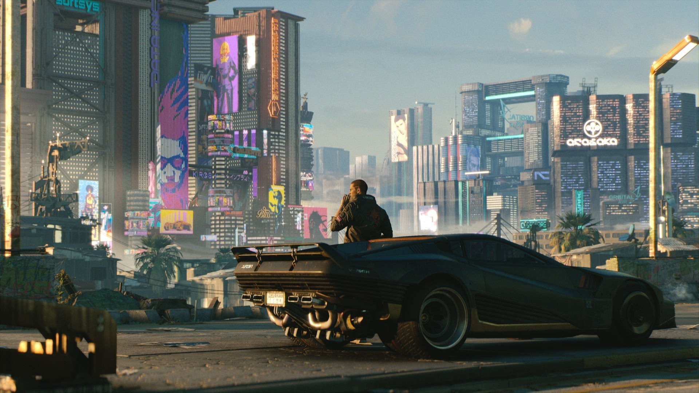
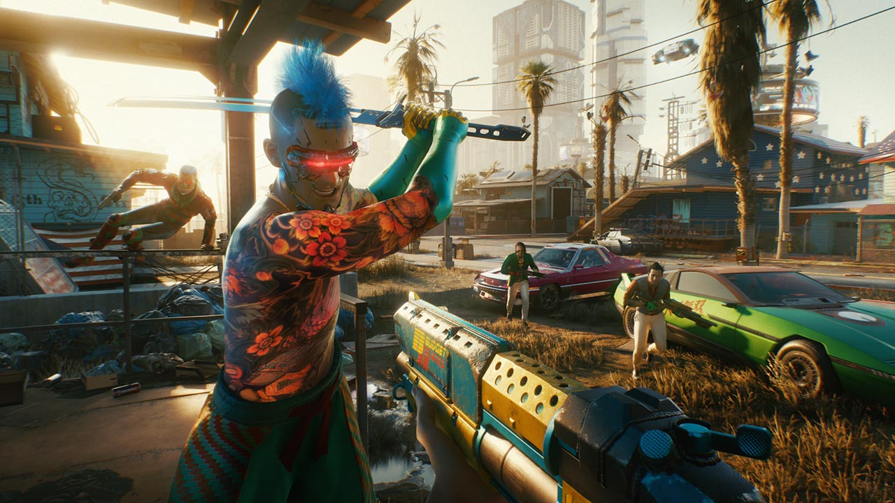
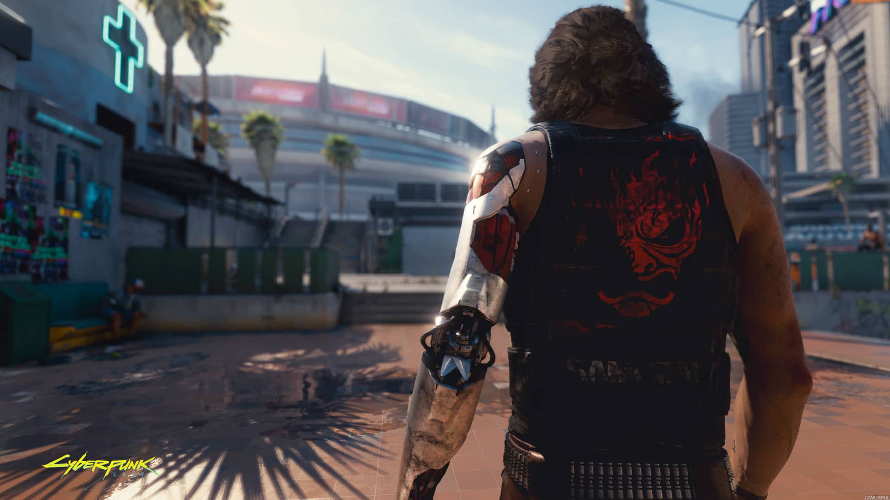

Night City mudará você

Cyberpunk 2077 é uma história de ação e aventura de mundo aberto ambientada em Night City, uma megalópole obcecada por poder, glamour e biomodificações. Você joga como V, um mercenário fora da lei atrás de um implante único que carrega a chave da imortalidade. Você pode personalizar aparatos cibernéticos, conjunto de habilidades e estilo de jogo do personagem e explorar uma vasta cidade onde as decisões tomadas definem a história e o mundo ao seu redor.
Jogue com um mercenário fora da lei

Torne-se um cyberpunk — um mercenário urbano equipado com melhorias cibernéticas — e construa a sua lenda nas ruas de Night City.
- Use uma variedade de armas aprimoradas, habilidades de hack e implantes de melhorias corporais para se tornar o maior matador de aluguel na cidade.
- Derrube todos, desde seguranças corporativos e policiais até gangues e outros mercenários para ganhar a credibilidade necessária para obter acesso a serviços melhores
- Gaste seu dinheiro suado em armas, aparatos cibernéticos ou divirta-se adquirindo carros,motocicletas e roupas deslubrantes
Night City mudará você

Entre no enorme mundo aberto de Night City, um lugar que define novos padrões no quesito de complexidade, profundidade e visual.
- Aventure-se por uma cidade maior do que a vida, explore zonas de guerra controladas por gangues, negocie no centro tumultuado da cidade e invada propriedades corporativas.
- Faça negociações com canais astutos, celebridades desesperadas e inteligências artificiais rebeldes — tudo enquanto luta com toda a garra que tem para ser alguém em Night City.
- Tome decisões em sua jornada e assista à história mudar com base nas suas ações.
ROUBE O IMPLANTE QUE CONCEDE A VIDA ETERNA

Aceite o trabalho mais arriscado da sua vida e corra atrás de um protótipo de implante com a chave da imortalidade.
- Vá ao seu limite absoluto para por as mãos no implante mais valioso de Night City — um protótipo de chip que oferece a vida eterna.
- Enfrente líderes corporativos, delitos do submundo e todas as pessoas mais temíveis de Night City — aqueles que farão de tudo em seu poder para colocar as mãos no protótipo do chip.
- Escolha como lidar com este enorme poder e quem você quer se tornar.